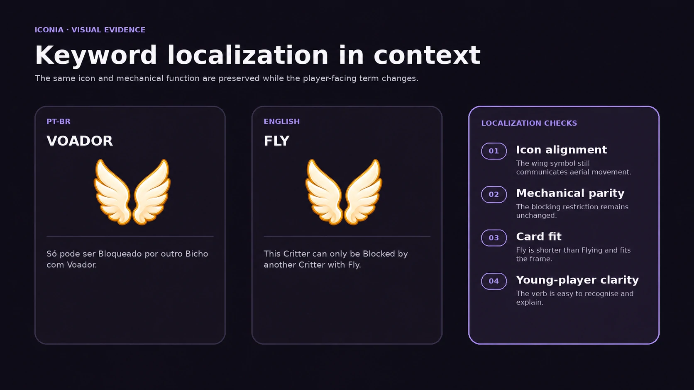
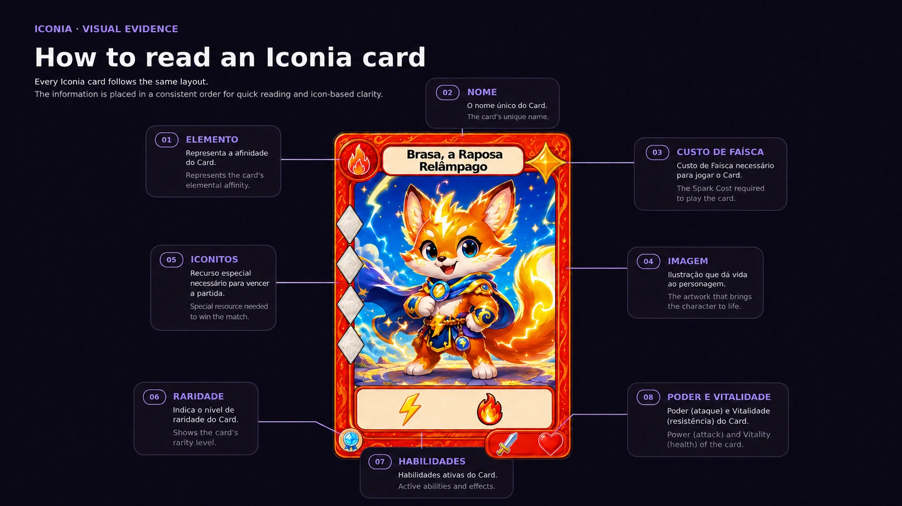

Keyword localization case study
Iconia: Critters
& Spells
A Brazilian Portuguese-to-English localization study focused on terminology, rules clarity, accessibility, and the relationship between language and visual game icons.
Project overview
A terminology system designed for play.
Iconia is an original fantasy card game built around magical Critters, elemental powers, visual icons, and concise rules.
Players use Sparks to summon Critters, cast Spells, and play Items. Critters Explore to collect Iconits, Block opposing Explorations, and Challenge exhausted enemies. The first player to collect 20 Iconits wins.
The localization challenge was not simply finding dictionary equivalents. Every term needed to remain mechanically accurate, visually compatible with its icon, understandable to younger players, and scalable across cards, rules, tutorials, and future expansions.
Visual evidence
Terminology shown inside the game system.
Original mock-ups demonstrate keyword fit, icon alignment, mechanical parity, and accessibility.


My role
Localization as part of game design.
My work combines translation, terminology development, rules writing, documentation, and linguistic QA.
Localization objectives
Six principles guided every decision.
Mechanical accuracy
The English term must preserve the complete Portuguese gameplay function.
Short wording
Keywords must fit cards, icons, reference sheets, and future digital interfaces.
Young-player clarity
Vocabulary should remain direct, memorable, and easy to explain during play.
Icon alignment
The word, symbol, and mechanical effect must communicate the same concept.
Distinct concepts
Similar mechanics need distinct terms without collisions or hidden ambiguity.
Scalable terminology
The glossary must support future cards, expansions, tutorials, and marketing.
Title localization
From Bichos e Feitiços to Critters & Spells.
The title needed to preserve Iconia’s warm, playful identity rather than shift toward darker or more technical fantasy language.
Critters was selected instead of the literal Creatures because it feels playful, approachable, and suitable for small magical animal-like characters. It also differentiates Iconia from more serious fantasy card games.
Spells remains direct, familiar, and mechanically clear. Together, Critters & Spells creates an accessible English title with a memorable rhythm.
Core terminology
The bilingual glossary.
Twenty foundational terms were reviewed for mechanics, readability, icon compatibility, and future reuse.
| PT-BR | English | Mechanical function |
|---|---|---|
| Iconito | Iconit | Victory resource collected mainly through Exploration. The first player to reach 20 or more Iconits wins. |
| Faísca | Spark | Resource used to play cards. Once per turn, a player may place one card from hand face down as one Spark. |
| Vitalidade | Vitality | Amount of damage a Critter can withstand before being defeated. |
| Poder | Power | Amount of damage a Critter deals while Blocking or Challenging. |
| Vigiar | Watch | Allows a Critter to Block even while Exhausted. |
| Recuar | Bounce | Returns one Critter or Item to its owner’s hand. |
| Romper | Crush | Defeats one Item and sends it to its owner’s Reserve. |
| Queimar | Burn | Gives a Critter -X Vitality until the end of the turn. |
| Voador | Fly | A Critter with Fly can only be Blocked by another Critter with Fly. |
| Congelar | Freeze | The affected card does not Ready during its controller’s next turn. |
| Crescer | Grow | Draw one card if you control a Critter with 4 or more Vitality. |
| Sobrevoar | Hover | A target Critter gains Fly until the end of the turn. |
| Derrubar | Drop | Exhaust one opposing Critter. |
| Imponente | Imposing | Gives a Critter +X Power when Blocking or Challenging this turn. |
| Impulsionar | Boost | Draw one card if one of your Critters Explored without being Blocked this turn. |
| Resistente | Tough | Ignores the first damage it receives. |
| Atiçar | Goad | Draw one card, then send one card from your hand to the Reserve. |
| Espiar | Peek | Look at the top card of your Spellbook. You may put it on the bottom, then draw one card. |
| Veloz | Fast | A Critter can Explore or Challenge during the turn it enters the Field. |
| Fortificar | Fortify | Gives a Critter +X Vitality until the end of the turn. |
Terminology architecture
A controlled naming pattern.
The glossary separates core concepts, immediate actions, and persistent traits.
Core nouns
Iconit, Spark, Vitality, Power
Persistent resources and statistics need stable labels that work on cards, counters, and UI.
Action verbs
Bounce, Crush, Burn, Freeze, Grow, Hover, Drop, Boost, Goad, Peek, Fortify
Immediate effects use active words that describe a change to the game state.
Persistent traits
Watch, Fly, Imposing, Tough, Fast
Reusable Critter abilities remain short enough to function as visual labels.
Key decisions
Selected terms and rejected alternatives.
The strongest portfolio evidence is not the final word alone, but the reasoning behind it.
Iconito → Iconit
Selected: IconitAlternatives: Icon Shard, Icon Crystal, Iconite, Iconium.
The coined term preserves Iconia’s brand identity and remains compact and easy to pluralise.
Faísca → Spark
Selected: SparkAlternatives: Energy, Mana, Flame, Charge.
Spark preserves the magical connection between a summoner and a Spellbook without borrowing another game’s resource vocabulary.
Voador → Fly
Selected: FlyAlternatives: Flying, Airborne, Winged.
Fly is short, action-oriented, and visually aligned with the wing icon.
Vigiar → Watch
Selected: WatchAlternatives: Vigilance, Guard, Alert, Watchful.
Watch is accessible, compact, and connected to the eye icon without creating confusion with protection mechanics.
Recuar → Bounce
Selected: BounceAlternatives: Retreat, Return, Push Back.
Bounce clearly separates returning a card to hand from defeating it.
Resistente → Tough
Selected: ToughAlternatives: Resistant, Durable, Sturdy, Resilient.
Tough is short, child-friendly, and easy to associate with the shell icon.
Atiçar → Goad
Current draft: GoadAlternatives: Stoke, Kindle, Rouse, Fuel.
Goad communicates provocation and momentum, but it remains a documented terminology risk for in-context testing.
Derrubar → Drop
Current draft: DropAlternatives: Knock Down, Push, Stagger, Exhaust.
Drop is compact and visually direct, but must be tested to ensure players understand that the result is Exhaustion.
Rules examples
From source rule to player-facing English.
Fly
The subject becomes explicit, while Blocked and Fly remain capitalised as defined game terms.
Watch
The translation states the exception directly and uses parallel terminology for the card state.
Fast
The ability explains exactly what becomes available instead of relying on genre knowledge.
Peek
The sequence is divided into short instructions and unnecessary repetition is removed.
Constraints
Localization decisions shaped by the product.
| Constraint | Localization response |
|---|---|
| Very little card text | Use short keywords supported by icons and reference material. |
| Younger target audience | Prefer concrete verbs, familiar vocabulary, and short instructions. |
| Print and digital use | Avoid long compounds and formatting-dependent terminology. |
| Icons carry mechanics | Keep each term semantically aligned with its visual symbol. |
| Cumulative X effects | Preserve the variable and document limits consistently. |
| Original game identity | Protect branded concepts instead of replacing them with generic genre language. |
Quality assurance
Semantic, linguistic, and in-context review.
Completed checks
- Mechanical meaning preserved
- Defined terms capitalised consistently
- Targets, durations, and values remain explicit
- Optional actions remain optional
- Keyword length supports cards and menus
- Terms remain aligned with their icons
- Colour is not the only identifying signal
Further playtesting
- Test Goad against experienced card game expectations
- Test whether Drop clearly communicates Exhaustion
- Compare Fly and Flying with younger players
- Confirm Fast remains clear without reminder text
- Review all terms in the complete English rules
Tools and workflow
Documented and version controlled.
Outcome
A scalable English foundation.
The terminology pass created a coherent English system for rules documents, card reference sheets, tutorials, tooltips, future expansions, terminology QA, and English-language playtesting.
The case study demonstrates that game localization requires decisions across mechanics, audience, layout, iconography, genre expectations, and long-term consistency—not direct word replacement alone.
Project documentation
Review the technical files behind the case study.
The public repository contains the Markdown case study, terminology documentation, and project structure used to maintain this localization work.